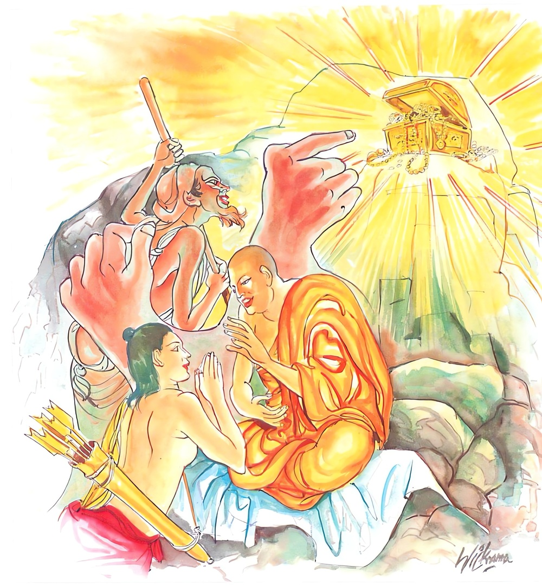

6-1 පළමුවන රාධතෙරණුවන්ගේ වස්තුවයි.
මෙම කතාව සද්ධර්ම සාගරයෙන් ද කියවන්න.
නිධීනං’ව පවත්තාරං යං පස්සෙ වජ්ජදස්සිනං
නිග්ගය්හවාදිං මෙධාවිං තාදිසං පණ්ඩිතං භජෙ
තාදිසං භජමානස්ස සෙය්යො හොති න පාපියො.
වරද දක්නා සුලු, නිගා කොට බණන සුලු, යම් කලණ මිතුරකු නිදන් සැල තුබූ තැන කියන්නකු වැනි කොට දක්නේ ද, එබඳු පණ්ඩිතයා සෙවුනේ ය. එබන්දකු සෙවුනහුට යහපතෙක් ම වන්නේ ය. අවැඩෙක් නො වන්නේ ය.

නිධීනං ව පවත්තාරං යනාදි මේ ධර්මදේශනාව ශාස්තෘන්වහන්සේ දෙව්රම වාසයකරන කාලයේ රාධතෙරුන් අරභයා දේශනා කළසේක.
හෙතෙම ගිහි කාලයෙහි සැවැත්නුවර දුප්පත් බමුණෙකි. භික්ෂූන් ළඟ ජීවත් වන්නෙමියි සිතා විහාරයට ගොස් තණ උගුල්ලාදැමීම කරමින් මිදුල් අමදිමින් මුවදෙවීමට පැන් සපයමින් විහාරයෙහිම විසීය. භික්ෂූහු ඔහුට සංග්රහකළහ. පැවිදි කරන්ට කැමති නොවෙත්. හෙතෙම පැවිද්ද නොලැබ කෘෂව කෙට්ටුවී ගියේය.
ඉන්පසු දිනක ශාස්තෘන්වහන්සේ උදෑසනම ලොව බලනසේක් ඒ බමුණා දැක කෙසේදැයි ඔහු ගන විමසාබලනසේක් ඔහු රහත්වන බව දැක, සවස්කාලයේ විහාර චාරිකාවේ හැසිරෙන ගමන් බමුණා ළඟට ගොස් බමුණ, කුමක් කරන්නෙහිදැයි ඇසූහ. භික්ෂූන්ට වත්පිළිවෙත් කරමින් සිටින්නෙමි ස්වාමීනියි කීවේය. ඔවුන්ගෙන් සංග්රහ ලබන්නෙහිද? ස්වාමීනි එසේය ආහාර පමණක් නම් ලැබෙයි. එහෙත් මා පැවිදිකරන්නේ නැත.
ශාස්තෘන්වහන්සේ මේ කරුණ නිසා භික්ෂුසංඝයා රැස්කරවා එය අසා, මහණෙනි, මේ බමුණාගෙන් උදව් ගත්බව සිහිකළ හැකි කවුරුහෝ ඇද්දැයි ඇසූහ. සැරියුත්තෙරණුවෝ, ස්වාමීනි, මට එය සිහිකළ හැකිය. මා පිඬුපිණිස රජගහනුවර සැරිසරද්දී තමන්ට ලැබුණු හැන්දක් පමණ භික්ෂාව මොහු මට දුන්නේය. මම මොහුගේ මේ පින ගැන සිහිකරන්නෙමියි කීහ. ඉතින් ශාරීපුත්රය ඒ කළ උපකාරය මොහු දුකින් මුදවන්ට තරම් නොවටනේදැයි වදාළකල්හි ස්වාමීනි, යහපතැයි මම මොහු පැවිදි කරවන්නෙමියි ඒ බමුණා පැවිදි කරවූහ. ඔහුට දානශාලාවෙහි ආසනපේළියේ අග ආසනයක් ලැබිණි. එනිසා කැඳබත් ආදියේ අඩුපාඩු නිසා ක්ලාන්ත වෙයි. තෙරණුවෝ ඔහු රැගෙන චාරිකාවේ ගියහ. නිරතුරුවම ඔබ මේ දේ කළයුතුය. මෙය නොකළයුතුයයි අවවාදානුශාසනා කළහ. හෙතෙම සුවචයෙක් විය. අවවාද මැනවින් පිළිගත්තේය. එහෙයින් ශික්ෂාවෙහි පිහිටුවූ සැටියෙන්ම පිළිපදිමින් කීප දිනකින්ම රහත්විය.
තෙරණුවෝ ඔවුන් රැගෙන බුදුන් ළඟට ගියහ. එහි ගොස් වැඳ වැඩහුන්හ. පසුව ශාස්තෘන්වහන්සේ පිළිසඳර කථාකරමින් කෙසේද ශාරීපුත්රය ඔබේ අන්තේවාසිකයා කීකරුදැයි ඇසූහ. එසේය ස්වාමීනි, ඉතාමත් සුවචය. යම් දොසක් කියාදෙනකල නොකිපෙයි. එසේ කිපී නැත. ශාරීපුත්රය, මෙබඳු සද්ධිවිහාරීන් ලදහොත් කොපමණ රඳවාගත හැකිදැයි විමසූහ. ස්වාමීනි, බොහෝවුවත් රඳවාගත හැකිය. ඉන්පසු දිනෙක දම්සභාවෙහි, සැරියුත් තෙරනුවෝ කතඤ්ඤු කෘතවේදී කෙනෙකි. සැන්දක් පමණ බතින් කළ උපකාරය සිහිකොට දුප්පත් බමුණා පැවිදි කළහ. ඔහුට දානශාලාවෙහි කෙළවර අසුනක් ලැබී ආහාර අඩුපාඩු විය. තෙරණුවෝ අවවාදයෙහි දක්ෂයහ. අවවාදයෙහි පිහිටන්නෙකුම ලබති. ශාස්තෘන්වහන්සේ ඔවුන්ගේ කථා අසා මහණෙනි, දැන් පමණක් නොව සැරියුත්තෙරණුවෝ පෙරත් කෘතවේදීවූවාහුමයයි කියා එය ප්රකටකරනු පිණිස-
නොපසුබට සිත් ඇති
සතුටු සිත්ඇති මහා හමුදා
පණපිටින් සිටියදී
කොසොල් හමුදා ඇල්ලී
මෙසේ සම්පත් ඇති
වීරියෙන් වැඩ කරන භික්ෂුව
නිවන් ලබන රිසියෙන්
කුසල් දහමෙහි යෙදෙමින්
සැම සංයෝජන නසා
නිවන් පසක් කරනේමැයි
යන දුකනිපාතයේ අලීනචිත්ත ජාතකය විස්තර වශයෙන් පැහැදිලි කළහ. එකල්හි වඩුවන් පාදය සුවපත්කරනු සඳහා තමන්ට කළ උපකාරය දැනගෙන, සර්වාංගයම සුදුවූ ඇත්පැටවා දුන්, තනිවම හැසුරුණු ඇතානම් සැරියුත්තෙරණුවෝමය. මෙසේ තෙරුන් අරභයා ජාතක කථාව කියා රාධතෙරුන් අරභයා, මහණෙනි, භික්ෂුව විසින් රාධතෙරුන් මෙන් සුවචවිය යුතුය. දොස් පෙන්වා අවවාද කරනවිට නොකිපියයුතුය. අවවාද දෙන්නා වනාහි නිධාන පෙන්වන්නෙකු මෙන් දැකියයුතුයයි වදාරා අනුසන්ධි ගළපා දහම් දෙසමින් මේ ගාථාව වදාළහ:
වැරදි දැක දැක හොඳ හිතින්
ඒ වැරදිවලට නිගා කරමින්
පෙන්වා දෙන තැනැත්තා
නිදන් පෙන්වන්නෙකු ලෙස
පිළිගෙන ඔහු බජනේ නම්
එම ඇසුර යහපත් වේ
එයින් දෙලොවටම සැප සැලසේ
එහි නිධීනං යනු ඒ ඒ තැන නිධන්කොට තිබූ රන්රිදී ආදි පැරණිනිධානයෝයි. පවත්තාරං යනු දුෂ්කර සේ ජීවත්වන දුප්පත් මිනිසුනට අනුකම්පාකොට, එන්න, සැපසේ ජීවත්වීමේ උපායක් කියාදෙන්නෙමියි නිධාන ඇති තැනට ගෙන ගොස් අතදිගහැර මේවා රැගෙන සැපසේ ජීවත්වෙවයි කියා දෙන්නෙකු මෙන් වජ්ජදස්සිනං යනු වරද දකින්නෝ දෙදෙනෙකි. මෙයින් මම මොහුට අසාරූප්යලෙස හැසිරීම ගැන පැකිළීම ගැන හෝ සංඝයාමැද නිග්රහකරන්නෙමයි කටයුතුකරන වැරදි සොයන්නාය, නොදන්නා දෙය දැන්වීමටත්, දන්නා දෙය තවත් හොඳින් කියාදීමටත් ඔහුගේ සීලාදි සම්පත් වැඩිදියුණු කරදීමටත් ඒ ඒ වැරදි දැකීමෙන් ඒ වැරදිවලින් එගොඩවීමේ මග කියාදෙන පසුරක්මෙන් සිටින තැනැත්තායයි දෙදෙනෙකි. මෙහි, එයින් දෙවැන්නා අදහස් කරන ලදි. යම්සේ දුප්පත් මිනිසෙකුට මෙය ගනුවයි තර්ජනයෙන් හෝ පහරදීමෙන් හෝ නිධානයක් පෙන්වාදෙන කල කෝප නොකෙරෙයිද, සතුටුමවෙයිද එපරිදි එබඳු පුද්ගලයන්ගේ නොගැළපෙන හෝ අතපසුවීම් හෝ දැක පෙන්වාදෙන විට කෝප නොවිය යුතුය. සතුටුම වියයුතුය. ස්වාමීනි, මා අතින් බරපතල වරදක්විය. ඔබ මගේ ආචාර්ය උපාධ්යායකත්ත්වයේ සිට අවවාද කරන්නෙහිය. නැවත නැවතත් මෙසේම කරන්නැයි ඒ තත්ත්වය පවරාදීම කළයුතුය. නිග්ගය්හවාදිං යනු ඇතැම් කෙනෙක් සද්ධිවිහාරිකයන්ගේ නොසරුප්කම් හෝ අත්වැරදි දැක මොහු මට මුවසෝදන පැන් ගෙනදීමාදියෙන් උවටැන් කරයි. ඉදින් මේ වැරදි කීවොත් ඉන්පසු ඔහුගේ ඒ සැලකිලිනොලැබී පිරිහීමකට පත්විය හැකියයි වැරදි කීමට අපොහොසත් වන්නේ නම් එය නිග්ගය්හවාදී නම් නොවෙයි. හෙතෙම මේ සසුනෙහි කැලිකසළ වගුරු වන්නෙකි. යමෙක් වනාහි එබඳු වැරදි දැක, වරදේ හැටියට තර්ජනය කොට පලවාහරිමින් දඬුවම් දෙමින් වෙහෙරින් එළවමින් හික්මවයිද, මේ නිග්ගය්හවාදී නමි. හරියට බුදුරදුන් මෙනි. ඒ සඳහා මෙසේත් ප්රකාශකොට ඇත. ආනන්ද මම නිග්රහ කළයුතුතැන එසේ කළයුතුයයි කියමි. ඒ නිග්රහය යමෙකුට සාරවත්ව සිටින්නේය. මෙධාවිං යනු ධර්මය ඇසුරුකොට සංවර්ධනයවූ ප්රඥාවෙන්යුත් තැනැත්තාය. තාදිසං යනු එබඳු පණ්ඩිතයෙකු භජනය, සේවනය කළයුතුය. තාදිසං යනු එබඳු ආචාර්යවරයෙකුය. භජමානස්ස යනු අතවැසියාට සෙය්යො හොති න පාපියො, වැඩීමක්ම වෙයි. පිරිහීමක් නොවෙයි. දේශනාවසානයේ බොහෝදෙනා සෝවාන්ඵලාදියට පැමිණියාහුය.